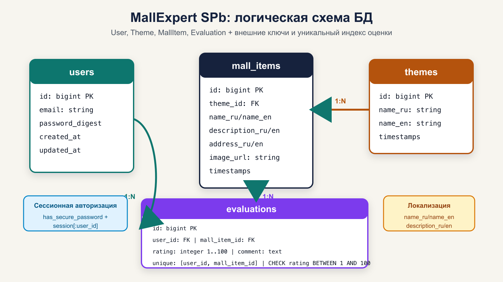
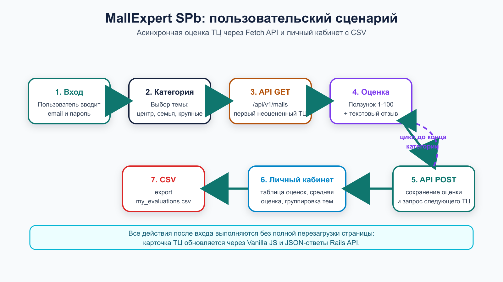
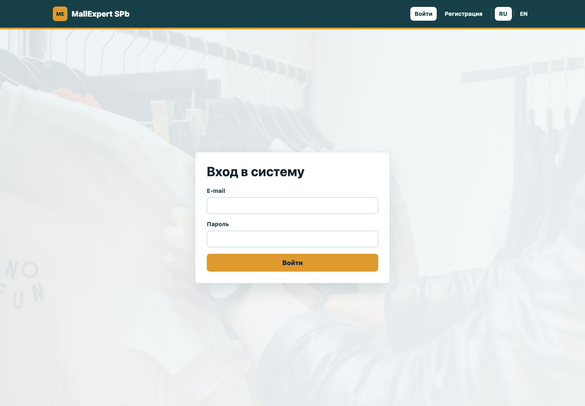
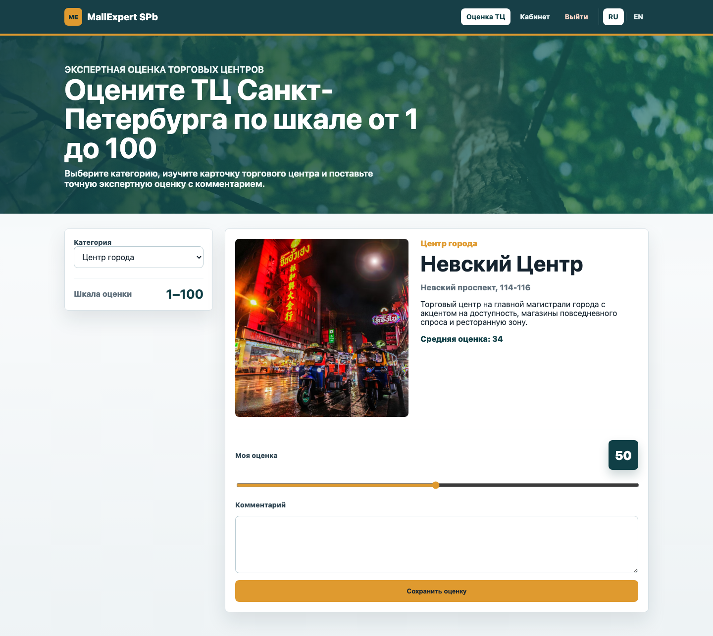
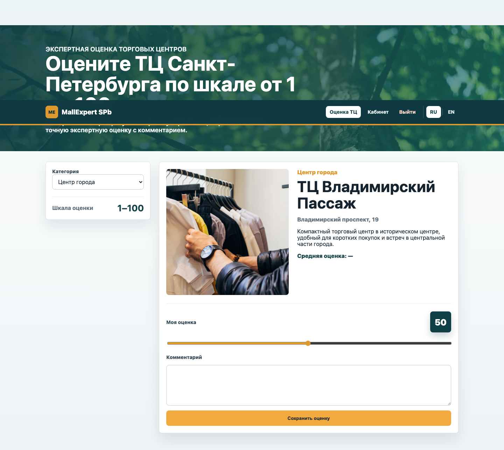
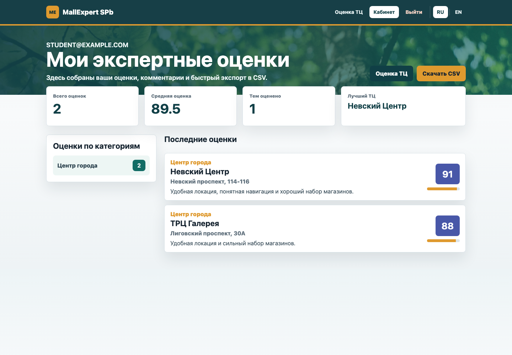
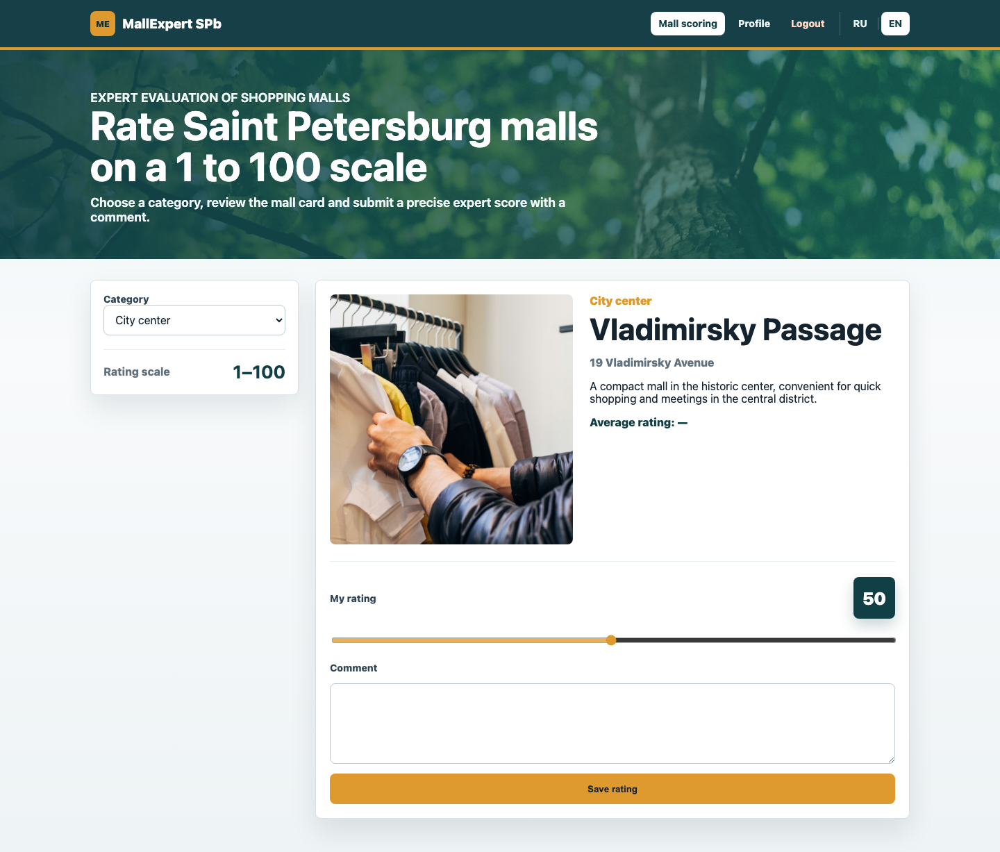

Санкт-Петербургский политехнический университет Петра Великого
Институт компьютерных наук и кибербезопасности
Высшая школа прикладной информатики
по дисциплине «Методики разработки современных WEB-приложений»
Выполнил
студент гр. 5140903/50401
Татарченко Андрей Александрович
Преподаватель
доцент, к.т.н.
Иванищев Алексей Вячеславович
Санкт-Петербург
2026
на выполнение курсового проекта
Студенту: Татарченко Андрей Александрович
Группа: 5140903/50401
Дата получения задания: 03.02.2026
Преподаватель
____________________ / А.В. Иванищев /
Задание принял к исполнению
____________________ / А.А. Татарченко /
Дата: 17.02.2026
В курсовом проекте я разработал WEB-приложение MallExpert SPb на фреймворке Ruby on Rails 8 для экспертной оценки и выбора торговых центров Санкт-Петербурга. Я выбрал предметную область ТЦ и ТРЦ, потому что для нее естественно сравнивать объекты по совокупности признаков: расположение, удобство, торговый состав, семейный досуг и общее качество посещения. В приложении пользователь регистрируется, входит в систему, выбирает категорию торговых центров, получает первую неоцененную карточку и выставляет экспертную оценку плавным интерактивным ползунком от 1 до 100.
В качестве хранилища я использовал PostgreSQL, а серверную часть построил на MVC-архитектуре Rails. Аутентификацию я реализовал вручную через has_secure_password, bcrypt, SessionsController и хранение идентификатора пользователя в session[:user_id]. Для динамики интерфейса я написал Vanilla JS-модуль на Fetch API, который получает карточку ТЦ и сохраняет оценку без перезагрузки страницы. Также я реализовал русскую и английскую локализацию, личный кабинет пользователя, расчет средней оценки и экспорт пользовательских оценок в CSV.
Современные WEB-приложения часто решают задачу экспертного выбора: пользователь не просто просматривает объект, а последовательно оценивает его по заданной шкале, накапливает персональную статистику и получает возможность вернуться к результатам. Такой подход используется в рекомендательных системах, сервисах отзывов, образовательных тренажерах и внутренних корпоративных инструментах. Я выбрал эту идею как основу курсового проекта, потому что она позволяет показать полный цикл разработки: от проектирования структуры данных до динамического интерфейса и сохранения результатов в базе.
Предметной областью моей работы стали торговые центры Санкт-Петербурга. В отличие от абстрактных карточек или простых изображений, ТЦ имеют понятные пользователю характеристики: адрес, назначение, формат посещения, развлекательная инфраструктура, удобство для семейного досуга и масштаб комплекса. Поэтому оценка торговых центров хорошо подходит для демонстрации экспертной системы: пользователь может сравнивать реальные объекты и фиксировать собственное мнение.
Отдельно я сделал акцент на шкале оценки от 1 до 100. В примерах лабораторных и курсовых работ часто встречается дискретная шкала 1-5 или 1-10, но она грубая: оценка 4 и 5 не дает пространства для более точного экспертного различия. В моем приложении я использовал HTML5 range, похожий по ощущению на интерактивные стикеры-опросы в социальных сетях. Такой ползунок позволяет быстро поставить не только условные «хорошо» или «отлично», но и более точную оценку, например 76, 88 или 94 балла.
Цель моей работы - разработать WEB-приложение на Ruby on Rails 8 и PostgreSQL для экспертной оценки торговых центров Санкт-Петербурга с асинхронным интерфейсом, ручной сессионной авторизацией, локализацией и экспортом результатов.
Для достижения цели я поставил и выполнил следующие задачи:
User, Theme, MallItem и Evaluation;has_secure_password;/:locale для страниц и отдельный JSON API;my_evaluations.csv;Объектом моей работы является процесс разработки современных WEB-приложений на MVC-фреймворках. Предметом работы является реализация экспертной системы оценки объектов на Ruby on Rails с серверной логикой, клиентской динамикой, хранением данных и локализацией интерфейса.
Итоговое приложение получило название MallExpert SPb. Пользователь заходит на сайт, создает учетную запись или использует демо-пользователя, выбирает категорию торговых центров и начинает оценку. Сервер выдает первый торговый центр из выбранной категории, который еще не оценен текущим пользователем. После сохранения оценки система сразу запрашивает следующий объект. Когда все ТЦ в категории оценены, пользователь получает сообщение о завершении.
Я сделал приложение не как статическую демонстрацию, а как законченный учебный продукт: в нем есть база данных, миграции, сиды, авторизация, валидации, API, JavaScript, локализация, тесты, Dockerfile и полный отчет. Такой состав соответствует задаче курсового проекта: показать, что разработчик умеет собрать WEB-систему целиком, а не только отдельные страницы.
В начале работы я сформулировал набор функциональных требований, которые должны были быть проверяемыми по коду и по интерфейсу.
| N | Требование | Реализация в проекте |
|---|---|---|
| 1 | Пользователь может зарегистрироваться по e-mail и паролю | UsersController, has_secure_password, форма users/new |
| 2 | Пользователь может войти и выйти из системы | SessionsController, session[:user_id], кнопка выхода |
| 3 | Неавторизованный пользователь не может пользоваться рабочей областью | ApplicationController#authorize |
| 4 | Пользователь выбирает категорию ТЦ | Theme, селект на странице malls/index |
| 5 | Система выдает первый неоцененный ТЦ в категории | Api::V1::MallsApiController#index |
| 6 | Пользователь ставит оценку от 1 до 100 | input type="range", модель Evaluation |
| 7 | Пользователь оставляет текстовый комментарий | поле comment в форме и БД |
| 8 | Сохранение оценки выполняется без перезагрузки страницы | fetch() в malls_evaluation.js |
| 9 | Пользователь видит личный кабинет с оценками | ProfilesController#show |
| 10 | Пользователь может выгрузить оценки в CSV | ProfilesController#export, Evaluation.to_csv |
| 11 | Интерфейс поддерживает русский и английский языки | config/locales/ru.yml, config/locales/en.yml |
Особенно важным требованием я считал уникальность оценки: один пользователь должен иметь только одну запись Evaluation для одного ТЦ. Это требование я закрепил сразу на двух уровнях: валидацией Active Record и уникальным индексом базы данных.
Нефункциональные требования определяют не отдельные кнопки, а качество готового приложения. Я выделил следующие критерии:
1..100 должен контролироваться приложением и базой;bcrypt и password_digest;Я также учитывал учебное требование: структура проекта должна быть понятной преподавателю при проверке. Поэтому я придерживался стандартного расположения Rails-файлов, не прятал бизнес-логику в нестандартные папки и оставил ключевые решения в контроллерах, моделях и JavaScript-файле, которые легко открыть.
Основной сценарий я построил так:
/ru/login или /en/login;1..100;В этой последовательности я отделил HTML-страницы от API. Страница рабочей области рендерится один раз, а карточки и оценки обрабатываются через JSON. Такой подход делает интерфейс быстрее и демонстрирует современную модель взаимодействия браузера и Rails-сервера.
Ruby on Rails я выбрал как основной фреймворк, потому что он хорошо подходит для учебного проекта полного цикла. Rails сразу задает архитектуру MVC, предоставляет маршрутизацию, миграции, ORM Active Record, шаблонизатор ERB, работу с сессиями, защиту CSRF, тестовый фреймворк и средства локализации. Это позволило мне сосредоточиться на предметной области, а не писать инфраструктурный код с нуля.
Версия Rails 8 важна тем, что она отражает современное состояние фреймворка. В проекте я использовал стандартный набор Rails-компонентов: контроллеры, модели, представления, миграции, routes.rb, config/locales, импорт JavaScript через importmap и ассеты через Propshaft. Для базы данных я выбрал PostgreSQL, потому что он широко применяется в production-проектах и поддерживает надежные ограничения на уровне схемы.
Я сознательно не использовал Devise, хотя он часто встречается в Rails-проектах. По промту требовалась кастомная авторизация, поэтому я реализовал ее вручную. Это полезно для курсового проекта: в отчете можно показать, как именно создается пользователь, как проверяется пароль, как в сессии хранится идентификатор и как защищаются страницы.
| Компонент | Назначение |
|---|---|
| Ruby 3.3.11 | язык разработки серверной части |
| Ruby on Rails 8.0 | MVC-фреймворк приложения |
| PostgreSQL 16 | основная СУБД |
| Active Record | ORM, миграции, валидации и связи моделей |
| bcrypt | безопасное хеширование паролей |
| ERB | серверные HTML-шаблоны |
| Vanilla JavaScript | динамика рабочей области |
| Fetch API | обмен JSON между клиентом и сервером |
| I18n | русская и английская локализация |
| Minitest | unit и integration-тесты |
| Docker | воспроизводимый запуск приложения |
Этот стек я считаю достаточным для курсового проекта: он не перегружен лишними зависимостями, но покрывает все требования. Важным техническим решением стало использование Rails API-эндпоинтов внутри обычного MVC-приложения. Так я сохранил простую серверную структуру и одновременно сделал современный асинхронный UX.
Я спроектировал приложение по стандартному паттерну MVC:
User, Theme, MallItem, Evaluation;Разделение получилось следующим:
| Слой | Файлы | Ответственность |
|---|---|---|
| Модели | app/models/*.rb |
структура данных, связи, валидации, CSV |
| Контроллеры страниц | malls_controller.rb, users_controller.rb, sessions_controller.rb, profiles_controller.rb |
HTML-страницы и пользовательские сессии |
| API | app/controllers/api/v1/malls_api_controller.rb |
JSON-выдача ТЦ и сохранение оценки |
| Представления | app/views/... |
формы, рабочая область, личный кабинет |
| JavaScript | app/javascript/malls_evaluation.js |
динамическая загрузка карточки и отправка оценки |
| Локализация | config/locales/ru.yml, config/locales/en.yml |
текст интерфейса на двух языках |
В результате архитектура осталась простой. Мне не пришлось вводить сервисные объекты или отдельную frontend-сборку: для размера курсового проекта достаточно стандартных Rails-слоев.
Маршруты я разделил на две группы. HTML-страницы обернуты в scope "(:locale)", locale: /ru|en/, чтобы пользователь мог открыть /ru, /en, /ru/profile, /en/profile и другие локализованные адреса. API вынесен в пространство имен /api/v1, потому что JSON-эндпоинты не являются обычными страницами.
| URL | Метод | Контроллер | Назначение |
|---|---|---|---|
/ru или /en |
GET | MallsController#index |
рабочая область оценки |
/ru/malls |
GET | MallsController#index |
явный путь к рабочей области |
/ru/signup |
GET/POST | UsersController |
регистрация пользователя |
/ru/login |
GET/POST | SessionsController |
форма входа и создание сессии |
/ru/logout |
DELETE | SessionsController#destroy |
выход из системы |
/ru/profile |
GET | ProfilesController#show |
личный кабинет |
/ru/profile/export |
GET | ProfilesController#export |
скачивание CSV |
/api/v1/malls?theme_id=1 |
GET | Api::V1::MallsApiController#index |
получить первый неоцененный ТЦ |
/api/v1/malls |
POST | Api::V1::MallsApiController#create |
сохранить оценку и комментарий |
Листинг маршрутов приведен ниже. Я включил его полностью, потому что по нему удобно проверить соответствие проекта требованиям.
Rails.application.routes.draw do
get "up" => "rails/health#show", as: :rails_health_check
get "service-worker" => "rails/pwa#service_worker", as: :pwa_service_worker
get "manifest" => "rails/pwa#manifest", as: :pwa_manifest
namespace :api do
namespace :v1 do
get "malls", to: "malls_api#index"
post "malls", to: "malls_api#create"
end
end
scope "(:locale)", locale: /ru|en/ do
root "malls#index"
get "malls", to: "malls#index", as: :malls
get "signup", to: "users#new", as: :signup
post "signup", to: "users#create"
get "login", to: "sessions#new", as: :login
post "login", to: "sessions#create"
delete "logout", to: "sessions#destroy", as: :logout
resource :profile, only: [:show] do
get "export"
end
end
end
Я разработал четыре основные сущности.
| Таблица | Назначение | Ключевые поля |
|---|---|---|
users |
пользователи системы | email, password_digest |
themes |
категории торговых центров | name_ru, name_en |
mall_items |
карточки ТЦ/ТРЦ | name_ru, name_en, description_ru, description_en, address_ru, address_en, image_url, theme_id |
evaluations |
экспертные оценки пользователей | user_id, mall_item_id, rating, comment |
Связи моделей:
User has_many :evaluations;Theme has_many :mall_items;MallItem belongs_to :theme;MallItem has_many :evaluations;Evaluation belongs_to :user;Evaluation belongs_to :mall_item.Для таблицы evaluations я сделал уникальный индекс на пару user_id + mall_item_id. Это не позволяет одному пользователю создать дубликаты оценок для одного торгового центра. Также в миграции я добавил check constraint на диапазон rating BETWEEN 1 AND 100. Даже если кто-то обойдет интерфейс и отправит неверное значение напрямую в API, база не примет некорректную оценку.

Я спроектировал пользовательский сценарий как цикл экспертной оценки. Пользователь выбирает тему, получает карточку, оценивает ее, а затем система автоматически выдает следующий неоцененный объект. Такой сценарий хорошо подходит для набора экспертных данных: пользователь не тратит время на ручной выбор каждой карточки.

Аутентификацию я реализовал без Devise. В модели User я использовал has_secure_password, который добавляет методы установки пароля, подтверждения пароля и проверки пароля через authenticate. Для работы этого механизма в Gemfile подключен bcrypt, а в таблице users создано поле password_digest.
В SessionsController#create я ищу пользователя по e-mail и вызываю user.authenticate(params[:password]). Если пароль верный, я сохраняю user.id в session[:user_id]. После этого helper current_user в ApplicationController может восстановить пользователя для каждого следующего запроса. Метод authorize защищает рабочую область, личный кабинет и API: HTML-запросы перенаправляются на страницу входа, а JSON-запросы получают ответ 401 Unauthorized.
Такой вариант авторизации проще Devise, но для учебного проекта он даже полезнее: я явно показываю, как устроен вход, выход и проверка прав. При этом пароль не хранится в открытом виде, потому что bcrypt сохраняет только безопасный хеш.
Самая важная бизнес-модель проекта - Evaluation. В ней я закрепил диапазон оценки, связь с пользователем и торговым центром, ограничение длины комментария и уникальность пары user_id + mall_item_id. Также в этой модели я реализовал экспорт в CSV.
require "csv"
class Evaluation < ApplicationRecord
belongs_to :user
belongs_to :mall_item
validates :rating, presence: true, numericality: {
only_integer: true,
greater_than_or_equal_to: 1,
less_than_or_equal_to: 100
}
validates :comment, length: { maximum: 1_000 }, allow_blank: true
validates :user_id, uniqueness: { scope: :mall_item_id }
def self.to_csv(evaluations)
CSV.generate(headers: true) do |csv|
csv << ["mall_name_ru", "mall_name_en", "theme_ru", "theme_en", "rating", "comment", "created_at"]
evaluations.each do |evaluation|
mall = evaluation.mall_item
theme = mall.theme
csv << [
mall.name_ru,
mall.name_en,
theme.name_ru,
theme.name_en,
evaluation.rating,
evaluation.comment,
evaluation.created_at
]
end
end
end
end
Модель MallItem содержит методы локализованного вывода: localized_name, localized_description, localized_address. Благодаря этому контроллер и представление не решают каждый раз, какое поле выбрать. Еще в модели есть метод average_rating, который считает среднюю экспертную оценку и округляет ее до двух знаков. Это значение я показываю в карточке ТЦ.
Для надежности я продублировал критичные правила в миграции. Валидации удобны для пользовательских ошибок, но ограничения базы данных защищают от прямых вставок и случайных багов. Поэтому evaluations имеет внешний ключ на пользователя, внешний ключ на ТЦ, уникальный индекс и check constraint.
Локализацию я сделал через стандартный Rails I18n. В ApplicationController#set_locale я беру язык из params[:locale], проверяю, что он входит в список доступных локалей, и сохраняю его в сессии. В layout есть ссылки RU и EN, которые меняют текущий путь с другим параметром локали.
Отдельно я локализовал не только статический интерфейс, но и данные предметной области. В themes хранятся name_ru и name_en, а в mall_items - русские и английские названия, адреса и описания. Поэтому английская версия страницы показывает не просто переведенные кнопки, а полноценную карточку ТЦ на английском языке.
API-контроллер я вынес в app/controllers/api/v1/malls_api_controller.rb. Метод index принимает theme_id, находит все ТЦ выбранной темы, сравнивает их с оценками текущего пользователя и возвращает первый неоцененный объект. Если все объекты уже оценены, API возвращает done: true и сообщение для интерфейса.
Метод create принимает mall_item_id, rating и comment. Я использую find_or_initialize_by, поэтому повторная отправка оценки для той же пары пользователя и ТЦ не создает дубль, а обновляет существующую запись. Это решение согласуется с уникальным индексом и делает API устойчивее.
module Api
module V1
class MallsApiController < ApplicationController
before_action :authorize
def index
theme = Theme.find_by(id: params[:theme_id])
return render json: { done: true, message: t("mall_expert.api.choose_theme") } unless theme
scope = theme.mall_items.order(:id)
evaluated_ids = current_user.evaluations.where(mall_item_id: scope.select(:id)).select(:mall_item_id)
mall_item = scope.where.not(id: evaluated_ids).first
if mall_item
render json: mall_payload(mall_item)
else
render json: { done: true, message: t("mall_expert.api.theme_completed") }
end
end
def create
mall_item = MallItem.find(params[:mall_item_id])
evaluation = current_user.evaluations.find_or_initialize_by(mall_item: mall_item)
evaluation.rating = params[:rating]
evaluation.comment = params[:comment]
if evaluation.save
render json: {
status: "ok",
message: t("mall_expert.api.saved"),
average_rating: mall_item.average_rating,
evaluations_count: mall_item.evaluations.count
}
else
render json: { status: "error", errors: evaluation.errors.full_messages }, status: :unprocessable_entity
end
rescue ActiveRecord::RecordNotFound
render json: { status: "error", error: t("mall_expert.api.not_found") }, status: :not_found
end
private
def mall_payload(mall_item)
{
done: false,
mall_item: {
id: mall_item.id,
name: mall_item.localized_name,
description: mall_item.localized_description,
address: mall_item.localized_address,
image_url: mall_item.image_url,
theme: mall_item.theme.localized_name,
average_rating: mall_item.average_rating,
evaluations_count: mall_item.evaluations.count
}
}
end
end
end
end
На клиентской стороне я написал отдельный JavaScript-файл malls_evaluation.js. Он слушает событие turbo:load, находит элементы рабочей области, обрабатывает смену категории, обновляет значение ползунка и отправляет форму через fetch(). CSRF-токен берется из meta-тега layout, поэтому POST-запросы проходят стандартную Rails-защиту.
document.addEventListener("turbo:load", () => {
const workspace = document.querySelector("[data-mall-workspace]")
if (!workspace) return
const themeSelect = document.querySelector("#theme-select")
const emptyState = document.querySelector("#empty-state")
const cardBody = document.querySelector("#mall-card-body")
const form = document.querySelector("#evaluation-form")
const ratingRange = document.querySelector("#rating-range")
const ratingOutput = document.querySelector("#rating-output")
const comment = document.querySelector("#comment")
const mallItemId = document.querySelector("#mall-item-id")
const locale = document.body.dataset.locale || "ru"
function csrfToken() {
return document.querySelector("meta[name='csrf-token']")?.getAttribute("content")
}
function showEmpty(message) {
emptyState.classList.remove("is-hidden")
cardBody.classList.add("is-hidden")
form.classList.add("is-hidden")
emptyState.querySelector("p").textContent = message
}
function showMall(payload) {
const mall = payload.mall_item
mallItemId.value = mall.id
document.querySelector("#mall-image").src = mall.image_url
document.querySelector("#mall-image").alt = mall.name
document.querySelector("#mall-theme").textContent = mall.theme
document.querySelector("#mall-name").textContent = mall.name
document.querySelector("#mall-address").textContent = mall.address
document.querySelector("#mall-description").textContent = mall.description
document.querySelector("#average-rating").textContent = mall.average_rating || "—"
ratingRange.value = 50
ratingOutput.textContent = "50"
comment.value = ""
emptyState.classList.add("is-hidden")
cardBody.classList.remove("is-hidden")
form.classList.remove("is-hidden")
}
async function loadNextMall() {
const params = new URLSearchParams({ locale })
if (themeSelect.value) params.set("theme_id", themeSelect.value)
const response = await fetch(`/api/v1/malls?${params.toString()}`, {
headers: {
"Accept": "application/json",
"X-CSRF-Token": csrfToken()
}
})
const payload = await response.json()
if (!response.ok) {
showEmpty(payload.error || "Unable to load data")
return
}
if (payload.done) {
showEmpty(payload.message)
} else {
showMall(payload)
}
}
ratingRange.addEventListener("input", () => {
ratingOutput.textContent = ratingRange.value
})
themeSelect.addEventListener("change", loadNextMall)
form.addEventListener("submit", async (event) => {
event.preventDefault()
const response = await fetch(`/api/v1/malls?locale=${locale}`, {
method: "POST",
headers: {
"Content-Type": "application/json",
"Accept": "application/json",
"X-CSRF-Token": csrfToken()
},
body: JSON.stringify({
mall_item_id: mallItemId.value,
rating: ratingRange.value,
comment: comment.value
})
})
const payload = await response.json()
if (!response.ok) {
window.alert(payload.errors?.join(", ") || payload.error || "Unable to save evaluation")
return
}
await loadNextMall()
})
})
Личный кабинет я реализовал в ProfilesController#show. На странице пользователь видит общее количество оценок, среднюю оценку, количество оцененных тем и таблицу всех оценок. Данные загружаются через includes(mall_item: :theme), чтобы избежать лишних запросов к базе при выводе связанных объектов.
Экспорт я сделал через стандартную библиотеку Ruby CSV. Метод Evaluation.to_csv формирует файл с заголовками и строками оценок. В контроллере я вызываю send_data, задаю имя my_evaluations.csv и MIME-тип text/csv. Такой экспорт удобен для дальнейшего анализа в Excel, Google Sheets или другой системе.
В db/seeds.rb я добавил три категории и десять реальных торговых центров Санкт-Петербурга. Категории отражают разные сценарии посещения: центр города, семейный досуг и крупные комплексы. Для каждого ТЦ я указал русское и английское название, адрес, описание и URL изображения.
Я также создал демо-пользователя student@example.com с паролем password123, чтобы преподаватель мог быстро войти в систему и проверить основной сценарий без ручной регистрации. При этом регистрация в интерфейсе тоже работает.
Страница входа выполнена в спокойной рабочей стилистике. Пользователь видит поля e-mail и пароль, а после успешного входа попадает в рабочую область. Я не перегружал экран декоративными блоками, потому что для учебного экспертного инструмента важнее ясность формы и быстрый доступ к сценарию оценки.

Главный экран приложения состоит из двух частей: панели выбора категории и карточки торгового центра. Центральным элементом я сделал шкалу 1-100, где пользователь двигает ползунок и сразу видит выбранное число. Под шкалой находится поле комментария и кнопка сохранения.

После сохранения оценки интерфейс без перезагрузки запрашивает следующий ТЦ. Это видно по тому, что карточка меняется, а пользователь остается в том же рабочем контексте. Такой UX соответствует требованию Fetch API и делает процесс оценки быстрым.

В личном кабинете я вывел агрегаты и таблицу. Пользователь видит, сколько объектов он оценил, какова средняя оценка и в каких темах уже есть результаты. Ниже расположена таблица с ТЦ, темой, оценкой и комментарием. Кнопка «Скачать CSV» позволяет выгрузить эти данные.

Английская локализация проверяет сразу две части проекта: маршрутизацию с /:locale и данные с полями *_en. В английской версии меняются навигация, заголовки, подписи формы, категории и описания торговых центров.

Я написал unit-тесты для ключевых моделей. Для Evaluation проверяется диапазон оценки: значения меньше 1 и больше 100 должны быть невалидными. Также проверяется уникальность пары пользователь-ТЦ и генерация CSV. Для MallItem проверяется расчет средней оценки, потому что это значение используется в карточке ТЦ.
Такой набор тестов покрывает критичную бизнес-логику. Если в будущем изменить модель оценки, тесты сразу покажут, что нарушился диапазон, уникальность или расчет среднего значения.
Интеграционный тест проверяет пользовательский путь: вход, открытие рабочей области, запрос к API и сохранение оценки. Я считаю этот тест важным, потому что именно он связывает сессии, контроллеры, маршруты, модели и JSON-ответы. Unit-тесты проверяют детали, а integration-тест подтверждает, что приложение работает как система.
После сборки я выполнил smoke-test в браузере:
1. Открыл http://localhost:3000/ru/login.
2. Вошел под student@example.com / password123.
3. Выбрал категорию «Центр города».
4. Получил карточку ТРЦ «Галерея».
5. Поставил оценку 88 и добавил комментарий.
6. Убедился, что система показала следующую карточку.
7. Открыл личный кабинет и проверил наличие оценки.
8. Переключил интерфейс на английский язык.
9. Проверил, что локализованные тексты и данные отображаются корректно.
Для локального запуска проекта я подготовил стандартную последовательность команд:
cd /Users/doodels/.openclaw/workspace/projects/fooddecision-course
cp .env.example .env
bundle install
bin/rails db:create db:migrate db:seed
bin/rails server
После запуска приложение доступно по адресам:
http://localhost:3000/ru;http://localhost:3000/en.Демо-пользователь:
email: student@example.com
password: password123
Для воспроизводимого запуска я подготовил Dockerfile. Контейнер можно собрать и запустить командой:
docker build -t mall-expert-course .
docker run --rm -p 3000:3000 \
-e RAILS_ENV=development \
-e POSTGRES_HOST=host.docker.internal \
-e POSTGRES_USER=postgres \
-e POSTGRES_PASSWORD=postgres \
-e POSTGRES_DB=mall_expert_course_development \
mall-expert-course \
./bin/rails server -b 0.0.0.0 -p 3000
Такой способ удобен для переноса проекта на другое устройство: достаточно иметь Docker и доступную PostgreSQL-базу.
В результате выполнения курсового проекта я получил работающее WEB-приложение MallExpert SPb. Я реализовал полный пользовательский сценарий экспертной оценки торговых центров: вход, выбор категории, получение карточки, оценка ползунком 1-100, комментарий, сохранение результата, переход к следующему объекту и просмотр персональных оценок в личном кабинете.
По требованиям промта я выполнил следующие пункты:
| Требование | Статус | Где проверять |
|---|---|---|
| Rails 8 + PostgreSQL | выполнено | Gemfile, config/database.yml |
| Кастомная авторизация | выполнено | User, SessionsController, ApplicationController |
has_secure_password и bcrypt |
выполнено | app/models/user.rb, Gemfile |
Модели User, Theme, MallItem, Evaluation |
выполнено | app/models |
| Оценка 1-100 | выполнено | Evaluation, миграция, JS-ползунок |
| Уникальный индекс оценки | выполнено | db/schema.rb, миграция create_evaluations |
| Fetch API | выполнено | app/javascript/malls_evaluation.js |
API /api/v1/malls |
выполнено | MallsApiController |
| Личный кабинет | выполнено | ProfilesController#show |
| CSV-экспорт | выполнено | ProfilesController#export, Evaluation.to_csv |
| RU/EN локализация | выполнено | config/locales |
| 10 ТЦ по 3 категориям | выполнено | db/seeds.rb |
| Тесты | выполнено | test/models, test/integration |
| Отчет и скриншоты | выполнено | report, screens |
Проект можно использовать как основу для дальнейшего развития. Например, можно добавить роли администратора, редактирование списка торговых центров через интерфейс, расширенную аналитику по оценкам или фильтрацию по району города. Но базовая версия уже решает поставленную учебную задачу и демонстрирует основные навыки разработки Rails-приложений.
В ходе выполнения курсового проекта я спроектировал и разработал полноценное WEB-приложение на Ruby on Rails 8. Я прошел весь путь от постановки задачи и структуры базы данных до реализации интерфейса, API, тестов, Docker-запуска и пояснительной записки.
Главным техническим результатом для меня стала реализация связки Rails MVC + Fetch API. Серверная часть отвечает за надежное хранение данных и проверку правил, а клиентская часть делает основной сценарий быстрым и удобным. Отдельно я закрепил понимание ручной сессионной авторизации: в проекте нет Devise, поэтому весь процесс входа и защиты маршрутов реализован явно.
Я также убедился, что Rails 8 остается удобной экосистемой для учебных и прикладных WEB-проектов. Фреймворк позволяет быстро собрать приложение, но при этом не мешает контролировать важные детали: маршруты, валидации, SQL-ограничения, локализацию и формат API.
Итоговая версия MallExpert SPb соответствует требованиям промта: предметная область перенесена на торговые центры Санкт-Петербурга, используется шкала 1-100, реализованы кастомные сессии, PostgreSQL, JSON API, личный кабинет, CSV-экспорт, RU/EN локализация, тесты и отчетные материалы.
Ключевые файлы итогового проекта:
| Файл | Назначение |
|---|---|
Gemfile |
зависимости Rails 8, PostgreSQL, bcrypt, importmap, propshaft |
config/routes.rb |
маршруты HTML-страниц и JSON API |
app/controllers/application_controller.rb |
локализация, текущий пользователь, защита маршрутов |
app/controllers/api/v1/malls_api_controller.rb |
получение ТЦ и сохранение оценки |
app/models/evaluation.rb |
валидации оценки, уникальность, CSV |
app/javascript/malls_evaluation.js |
динамический интерфейс оценки |
db/seeds.rb |
три категории и десять ТЦ Санкт-Петербурга |
test/integration/mall_workflow_test.rb |
проверка пользовательского сценария |
Gemfilesource "https://rubygems.org"
ruby "3.3.11"
gem "rails", "~> 8.0.0"
gem "pg", "~> 1.1"
gem "puma", ">= 5.0"
gem "bcrypt", "~> 3.1"
gem "csv", "~> 3.3"
gem "propshaft"
gem "importmap-rails"
gem "turbo-rails"
gem "stimulus-rails"
gem "bootsnap", require: false
gem "tzinfo-data", platforms: %i[
mswin mingw x64_mingw jruby
]
group :development, :test do
gem "debug", platforms: %i[ mri mswin mingw x64_mingw ], require: "debug/prelude"
gem "brakeman", require: false
gem "rubocop-rails-omakase", require: false
end
group :development do
gem "web-console"
end
MallItemclass MallItem < ApplicationRecord
belongs_to :theme
has_many :evaluations, dependent: :destroy
validates :name_ru, :name_en, :description_ru, :description_en,
:address_ru, :address_en, :image_url, presence: true
def localized_name
I18n.locale == :en ? name_en : name_ru
end
def localized_description
I18n.locale == :en ? description_en : description_ru
end
def localized_address
I18n.locale == :en ? address_en : address_ru
end
def average_rating
evaluations.average(:rating)&.to_f&.round(2)
end
end
ApplicationControllerclass ApplicationController < ActionController::Base
protect_from_forgery with: :exception
before_action :set_locale
helper_method :current_user, :logged_in?, :language_path
def set_locale
locale = params[:locale].presence || session[:locale] || I18n.default_locale
locale = I18n.default_locale unless I18n.available_locales.map(&:to_s).include?(locale.to_s)
I18n.locale = locale.to_sym
session[:locale] = I18n.locale.to_s
end
def current_user
@current_user ||= User.find_by(id: session[:user_id]) if session[:user_id].present?
end
def logged_in?
current_user.present?
end
def authorize
return if logged_in?
respond_to do |format|
format.html { redirect_to login_path(locale: I18n.locale), alert: t("mall_expert.auth.required") }
format.json { render json: { error: t("mall_expert.auth.required") }, status: :unauthorized }
end
end
def language_path(path = "")
normalized_path = path.start_with?("/") ? path : "/#{path}"
"/#{I18n.locale}#{normalized_path}"
end
def default_url_options
{ locale: I18n.locale }
end
# Only allow modern browsers supporting webp images, web push, badges, import maps, CSS nesting, and CSS :has.
allow_browser versions: :modern
end
ProfilesControllerclass ProfilesController < ApplicationController
before_action :authorize
def show
@evaluations = current_user.evaluations.includes(mall_item: :theme).order(created_at: :desc)
@average_rating = @evaluations.average(:rating)&.to_f&.round(2)
@by_theme = current_user.evaluations.joins(mall_item: :theme).group("themes.id", "themes.name_ru", "themes.name_en").count
@top_evaluation = @evaluations.max_by(&:rating)
end
def export
evaluations = current_user.evaluations.includes(mall_item: :theme).order(created_at: :desc)
send_data Evaluation.to_csv(evaluations),
filename: "my_evaluations.csv",
type: "text/csv; charset=utf-8"
end
end
require "test_helper"
class MallWorkflowTest < ActionDispatch::IntegrationTest
setup do
@user = User.create!(email: "student@example.com", password: "password123", password_confirmation: "password123")
@theme = Theme.create!(name_ru: "Крупные комплексы", name_en: "Large complexes")
@mall = MallItem.create!(
theme: @theme,
name_ru: "ТРК Лето",
name_en: "Leto Mall",
description_ru: "Описание",
description_en: "Description",
address_ru: "Пулковское шоссе, 25",
address_en: "25 Pulkovskoe Highway",
image_url: "https://example.com/leto.jpg"
)
end
test "work area requires login" do
get "/ru/malls"
assert_response :redirect
assert_includes response.location, "/ru/login"
end
test "user can sign in and open work area" do
post "/ru/login", params: { email: @user.email, password: "password123" }
follow_redirect!
assert_response :success
assert_includes response.body, "Оцените ТЦ Санкт-Петербурга"
end
test "api returns first unevaluated mall and saves score" do
post "/ru/login", params: { email: @user.email, password: "password123" }
get "/api/v1/malls", params: { locale: "ru", theme_id: @theme.id }
assert_response :success
assert_equal @mall.id, response.parsed_body.dig("mall_item", "id")
post "/api/v1/malls", params: {
locale: "ru",
mall_item_id: @mall.id,
rating: 88,
comment: "Хороший набор магазинов"
}.to_json, headers: { "Content-Type" => "application/json", "Accept" => "application/json" }
assert_response :success
assert_equal 88, @user.evaluations.last.rating
end
test "profile exports csv" do
Evaluation.create!(user: @user, mall_item: @mall, rating: 92, comment: "Удобно")
post "/ru/login", params: { email: @user.email, password: "password123" }
get "/ru/profile/export"
assert_response :success
assert_includes response.body, "ТРК Лето"
end
end
docker build -t mall-expert-course-local .
docker run --rm \
-e RAILS_ENV=test \
-e POSTGRES_HOST=host.docker.internal \
-e POSTGRES_USER=postgres \
-e POSTGRES_PASSWORD=postgres \
-e POSTGRES_DB=mall_expert_course_test \
mall-expert-course-local ./bin/rails db:create db:migrate test
В папке screens/ находятся изображения, использованные в отчете:
mall_login.png - страница входа;mall_work_ru.png - рабочая область на русском языке;mall_after_rating.png - состояние после сохранения оценки;mall_profile.png - личный кабинет;mall_work_en.png - английская локализация;mall_schema_erd.png - схема базы данных;mall_flow.png - пользовательский сценарий.